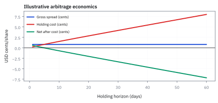
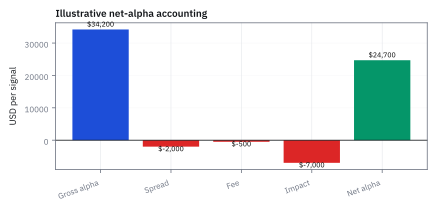

24.1 Market Efficiency, Limits, and Behavioural Roots
ราคาที่ผิดอยู่ได้ เพราะการแก้มันมีต้นทุนและความเสี่ยง และตัวเลขที่เห็นมีความหมายก็ต่อเมื่อรู้ว่ามันผ่านกระบวนการอะไรมา
หุ้นบริษัทเดียวกันสองชั้นให้เงินปันผลเท่ากันทุกบาท ชั้น A ซื้อได้ที่ \$50.00 ชั้น B short ได้ที่ \$50.80 เทรดเดอร์ซื้อ A และ short B อย่างละ 10,000 หุ้น แล้วบอกว่า “ได้เงินฟรี \$8,000” ค่าเข้าออกรวม \$0.12 ต่อหุ้น ค่ายืมหุ้นและค่าเงินทุน \$0.020 ต่อหุ้นต่อวัน ครบ 10 วันส่วนต่างหดเหลือ \$0.35 ไม่ถึงศูนย์ เหลือเงินจริงเท่าไร และถ้าส่วนต่างถ่างเป็น \$3.00 ก่อนจะเกิดอะไรขึ้น?
ลองตอบก่อนเปิดเฉลย
เหลือ \$1,300 ไม่ใช่ \$8,000: หักค่าเข้าออก \$1,200 ค่าถือ \$2,000 และส่วนต่างที่ยังค้าง \$3,500 คิดเป็น 1.3% ของหลักประกัน \$100,000 แต่ถ้าส่วนต่างถ่างเป็น \$3.00 ก่อน จะขาดทุนตามราคาตลาด \$22,000 หรือ 22% ของหลักประกัน นี่คือเหตุผลที่ราคาผิดอยู่ได้ การแก้มันไม่ใช่เงินฟรี
สิ่งที่เราจะสร้าง
ทั้งเล่มสมมติว่าราคาในตลาดคือราคาที่ใช้คิดได้ หน้านี้ถามตรง ๆ ว่าสมมติฐานนั้นแปลว่าอะไร ตลาดที่มีประสิทธิภาพ (efficient) ไม่ได้แปลว่าราคาถูกต้องทุกวินาที แต่แปลว่ากำไรที่ทำซ้ำได้หลังหักความเสี่ยงและต้นทุนหายากมาก
เราจะเริ่มจากบัญชีของดีลในโจทย์ ดูว่าทำไมคนแก้ราคาผิดอาจเจ๊งก่อน นิยามคำว่ามีประสิทธิภาพให้ทดสอบได้ แล้วเจอข้อจำกัดที่ทดสอบมันลำพังไม่ได้ จากนั้นไปฝั่งมนุษย์: prospect theory อธิบายว่าทำไมคนขายตัวกำไรเร็วและถือตัวขาดทุนนาน ปริศนาสามบานประตูสอนว่าข้อมูลคือตัวเลขบวกกระบวนการ และจบที่ alpha สุทธิก่อนส่งคำสั่ง
ศัพท์ที่ใช้ในหัวข้อนี้
- Market efficiency (EMH)
- สมมติฐานว่าราคารวมข้อมูลที่หาได้ไว้แล้ว จนกลยุทธ์ที่ใช้ข้อมูลนั้นทำผลตอบแทนเกินค่าชดเชยความเสี่ยงและต้นทุนซ้ำ ๆ ไม่ได้ ใช้เป็นสมมติฐานตั้งต้นที่สัญญาณเทรดต้องชนะให้ได้
- Arbitrage และ limits to arbitrage
- Arbitrage คือซื้อของถูกขายของแพงที่ให้เงินสดเหมือนกัน limits to arbitrage คือต้นทุน การยืมหุ้น เงินทุน และความเสี่ยงที่ส่วนต่างถ่างก่อน ซึ่งทำให้คนแก้ราคาไม่ได้ทันที
- Alpha
- ผลตอบแทนที่เหลือหลังหักส่วนที่มาจากการรับความเสี่ยงของตลาด (beta จาก 15.2) และต้นทุน ใช้แยกฝีมือหรือสัญญาณออกจากผลตอบแทนที่ใครถือตลาดก็ได้
- Prospect theory
- แบบจำลองของ Kahneman และ Tversky ที่ให้คนประเมินผลลัพธ์เป็นกำไรหรือขาดทุนเทียบจุดอ้างอิง และเจ็บกับการขาดทุนมากกว่าดีใจกับกำไรขนาดเท่ากัน
- Disposition effect
- แนวโน้มขายหุ้นที่กำไรเร็วเกินไปและถือหุ้นที่ขาดทุนนานเกินไป วัดได้จากบันทึกการเทรดจริง
- Survivorship bias
- ความเอียงจากการเห็นเฉพาะสิ่งที่รอดมา เช่นกองทุนที่ยังอยู่ ผลย้อนหลังจึงดูดีกว่าความจริง
สัญลักษณ์และหน่วย
| สัญลักษณ์ | ความหมาย | หน่วย |
|---|---|---|
| $Q,\ d$ | จำนวนหุ้นแต่ละขา และส่วนต่างราคาต่อหุ้นวันเปิด | หุ้น, \$ ต่อหุ้น |
| $c,\ f,\ T$ | ค่าเข้าออกต่อหุ้น ค่าถือต่อหุ้นต่อวัน และจำนวนวัน | \$ ต่อหุ้น, \$ ต่อหุ้นต่อวัน, วัน |
| $R,\ R^M,\ \beta$ | ผลตอบแทนของกลยุทธ์ ของตลาด และความไวต่อตลาด | สัดส่วนต่อช่วง, ไม่มีหน่วย |
| $\alpha$ | ผลตอบแทนที่เหลือหลังหักความเสี่ยงตลาดและต้นทุน | สัดส่วนต่อช่วง |
| $v(x),\ \eta,\ \lambda$ | ค่าในใจของผลลัพธ์ $x$ ความโค้ง และตัวคูณความเจ็บของการขาดทุน | หน่วยค่าในใจ, ไม่มีหน่วย |
ขั้นที่ 1 — บัญชีของดีลที่ดูเหมือนเงินฟรี
โจทย์ให้อะไรมาบ้าง: $Q=10{,}000$ หุ้นต่อขา ส่วนต่างวันเปิด $d=0.80$ ค่าเข้าออก $c=0.12$ ต่อหุ้น ค่าถือ $f=0.020$ ต่อหุ้นต่อวัน นาน $T=10$ วัน และวันปิดส่วนต่างยังค้าง 0.35 ต่อหุ้น หลักประกันที่โบรกเกอร์เรียกสมมติเป็น 20% ของขาซื้อ $0.2(10{,}000)(50)=\$100{,}000$
บรรทัดแรกเป็นนิยามของบัญชี ในวงเล็บคือส่วนต่างต่อหุ้นหลังจ่ายค่าเข้าออกและค่าถือ ก้อนหลังคือส่วนต่างที่ยังไม่หายตอนปิด ซึ่งเราไม่ได้เก็บ กำไรของดีลแบบนี้จึงไม่ใช่ส่วนต่างบนจอ แต่คือส่วนต่างที่หดจริงลบต้นทุนทั้งหมด
คำตอบ: เหลือ \$1,300 หรือ 1.3% ของหลักประกันในสิบวัน จาก \$8,000 บนจอ หายไปกับค่าเข้าออก \$1,200 ค่าถือ \$2,000 และส่วนต่างที่ค้าง \$3,500
ตรวจเองใน 10 วินาที: $8{,}000-1{,}200-2{,}000-3{,}500=1{,}300$
ขั้นที่ 2 — ถ้าส่วนต่างถ่างก่อน: ทำไมคนแก้ราคาอาจเจ๊งก่อน
ขั้นที่ 1 สมมติว่าส่วนต่างหดทันเวลา แต่ไม่มีอะไรบังคับให้หดในสิบวัน ถ้าคนขายหุ้นชั้น A หนักขึ้น ส่วนต่างอาจถ่างเป็น \$3.00 ก่อน บัญชีต้องบันทึกขาดทุนตามราคาตลาดทุกวัน
ขาดทุน 22% ของหลักประกันทั้งที่ความคิดเดิมยังถูก โบรกเกอร์เรียกหลักประกันเพิ่ม และนักลงทุนของกองทุนอาจถอนเงินหลังเห็นขาดทุน ถ้าต้องปิดตอนนั้น ขาดทุนจะกลายเป็นของจริง Shleifer และ Vishny (1997) เรียกสิ่งนี้ว่า limits to arbitrage: คนที่แก้ราคามีเงินจำกัด และเงินหายตอนที่ราคาผิดที่สุด
ผลคือราคาที่ผิดอยู่ได้นาน ไม่ใช่เพราะไม่มีใครเห็น แต่เพราะการแก้มันต้องใช้เงินที่ทนขาดทุนระหว่างทางได้ ต้นทุนการถือที่โตตามเวลาก็กินส่วนต่างไปทุกวัน
Figure 24.1a — ต้นทุนการถือกินส่วนต่างทุกวัน

ภาพสอนแบบง่าย แกนนอนคือจำนวนวันที่ถือ 1 ถึง 60 เส้นฟ้าคือส่วนต่าง 0.80 เส้นแดงคือต้นทุน $0.12T+0.10\sqrt T$ ซึ่งเป็นแบบจำลองต้นทุนของรูปเอง ไม่ใช่ตัวเลขของขั้นที่ 1 เส้นเขียวคือส่วนต่างหลังหักต้นทุน ติดลบหลังวันที่ 4.83 ป้ายแกนตั้งเขียนว่า cents แต่ตัวเลขเป็นดอลลาร์ต่อหุ้น (0.80 คือ \$0.80 ของโจทย์)
ขั้นที่ 3 — “มีประสิทธิภาพ” แปลว่าอะไร ในรูปที่ทดสอบได้
คำพูดว่า “ตลาดมีประสิทธิภาพ” ทดสอบไม่ได้จนกว่าจะเขียนเป็นสมการ Eugene Fama (1970) เขียนมันเป็นคำกล่าวเรื่องผลตอบแทนส่วนเกิน: เมื่อหักส่วนที่ได้จากการรับความเสี่ยงของตลาดและหักต้นทุนแล้ว ข้อมูลที่มีวันนี้ต้องทำนายส่วนที่เหลือไม่ได้
บรรทัดแรกหักสองอย่างออกจากผลตอบแทน: ส่วนที่ได้เพราะเกาะตลาด ($\beta R^M$ จาก 15.2) กับต้นทุน บรรทัดที่สองคือสมมติฐานตั้งต้น ($H_0$) ว่าข้อมูล $I_t$ ที่มี ณ เวลาเทรด ทำนายส่วนที่เหลือไม่ได้ เครื่องหมาย $\mid$ อ่านว่า “เมื่อรู้”
ตัวอย่างบรรทัดสุดท้าย: กลยุทธ์ได้ 1.2% ตลาดได้ 1.0% และ $\beta=1.10$ จึงอธิบายได้ 1.1% ด้วยการเกาะตลาด ต้นทุน 0.1% กินส่วนที่เหลือหมด ผลตอบแทนรวมเป็นบวก แต่ส่วนเกินสุทธิเป็นศูนย์ EMH ไม่ได้บอกว่าผลตอบแทนต้องเป็นศูนย์ มันบอกว่าส่วนเกินแบบนี้หายาก
ขั้นที่ 4 — alpha ขึ้นกับแบบจำลองที่เราเลือก
ค่าที่วัดได้จริงมีแค่ผลตอบแทนที่เกิดขึ้น ส่วน “ผลตอบแทนที่ควรได้” มาจากแบบจำลองความเสี่ยง $M$ ที่เราเลือกเอง ตัวอย่างสมมติ: กลยุทธ์หุ้นเล็กได้เฉลี่ย 1.00% ต่อเดือน ตลาดได้ 0.60% $\beta=1.1$ แล้วลองเพิ่มปัจจัยขนาดกิจการ (size) ที่มีค่าชดเชย 0.30% ต่อเดือนและกลยุทธ์มีความไว 0.8
ข้อมูลชุดเดียวกัน alpha เปลี่ยนจาก 0.34% เป็น 0.10% ต่อเดือน เพียงเพราะเปลี่ยนแบบจำลอง ถ้าพบ alpha ไม่เป็นศูนย์ จึงสรุปได้แค่ว่า “ตลาดไร้ประสิทธิภาพ หรือแบบจำลองความเสี่ยงของเราขาดอะไรไป” แยกสองอย่างนี้ด้วยข้อมูลไม่ได้ Fama เรียกข้อนี้ว่า joint hypothesis problem
ประวัติศาสตร์ยืนยันเรื่องนี้: หุ้นเล็กและหุ้นราคาถูกเทียบกับมูลค่าบัญชีเคยดูเหมือนมี alpha เทียบกับ CAPM จน Fama และ French (1993) เพิ่มปัจจัยขนาดและมูลค่าเข้าไป alpha ส่วนใหญ่ก็กลายเป็นค่าชดเชยของปัจจัยที่เพิ่งตั้งชื่อ
ขั้นที่ 5 — prospect theory: คนวัดผลเป็นกำไรขาดทุน ไม่ใช่เป็นความมั่งคั่ง
ถ้าตลาดมีคนแก้ราคาได้ไม่จำกัด ความผิดพลาดของมนุษย์จะไม่เหลือร่องรอยในราคา แต่ขั้นที่ 2 แสดงว่าการแก้มีขีดจำกัด จึงคุ้มที่จะรู้ว่ามนุษย์ผิดแบบไหน Kahneman และ Tversky (1979) เสนอว่าคนให้ค่ากับผลลัพธ์เทียบจุดอ้างอิง เช่นราคาที่ซื้อ นี่คือนิยามของแบบจำลองนั้น
$x$ คือกำไรหรือขาดทุนเทียบจุดอ้างอิง $\eta\lt1$ ทำให้เส้นโค้ง: กำไร 200 ไม่ได้ให้ความสุขสองเท่าของกำไร 100 $\lambda\gt1$ ทำให้ฝั่งขาดทุนชันกว่า: เสีย 100 เจ็บกว่าได้ 100 ความโค้งกับความชันคนละเรื่องกัน และความโค้งคือตัวที่ทำให้พฤติกรรมสองฝั่งต่างกันในขั้นถัดไป
ขั้นที่ 6 — ทำไมขายตัวกำไรเร็ว และถือตัวขาดทุนนาน
ใช้ $\eta=0.5$ และ $\lambda=2$ เทียบสองทางเลือกในแต่ละฝั่ง ด้วยโอกาสครึ่งต่อครึ่งที่ไม่บิดน้ำหนัก: ฝั่งขาดทุน ขายตัดขาดทุน 100 แน่ ๆ หรือถือต่อแล้วกลับมาเสมอตัวหรือขาดทุน 200 ฝั่งกำไร ขายเก็บกำไร 100 แน่ ๆ หรือถือต่อแล้วได้ 0 หรือ 200
ฝั่งขาดทุน การถือต่อ (−14.14) ดีกว่าการตัดขาดทุน (−20) ในใจคนคนนี้ จึงถือตัวขาดทุนไว้ ฝั่งกำไร การขายเก็บ (10) ดีกว่าการถือต่อ (7.07) จึงรีบขาย ทั้งที่ทั้งสองฝั่งค่าเฉลี่ยของเงินเท่ากันทุกทางเลือก
ความโค้งกลับด้านที่จุดอ้างอิงคือต้นเหตุ ส่วน $\lambda$ ขยายขนาดอย่างเดียว ถ้า $\eta=1$ ทางเลือกในแต่ละฝั่งจะเท่ากันพอดี
Figure 24.1b — ค่าในใจไม่สมมาตรรอบจุดอ้างอิง

แกนนอนคือผลลัพธ์เทียบจุดอ้างอิง −1 ถึง +1 ดอลลาร์ต่อหุ้น (401 จุด) เส้นใช้ $\eta=0.8$ และ $\lambda=2.25$ ใกล้ค่าที่ Tversky และ Kahneman ประมาณในปี 1992 ที่ +1 ได้ค่า 1 ที่ −1 ได้ −2.25 เส้นโค้งคว่ำฝั่งกำไรและโค้งหงายฝั่งขาดทุน ค่าชุดนี้ใช้สอนรูปทรง ไม่ใช่ค่าของเทรดเดอร์ทุกคน
ขั้นที่ 7 — disposition effect ในบันทึกการเทรด
โจทย์ให้อะไรมาบ้าง: บันทึกการปิดสถานะ (ข้อมูลจำลองใน Figure 24.1c) นับตามจำนวนวันที่ถือ 1 ถึง 10 วัน ปิดกำไร 22, 20, 18, 16, 14, 12, 11, 10, 9, 8 รายการ ปิดขาดทุน 4, 5, 6, 7, 8, 9, 10, 11, 12, 13 รายการ ถามว่าตัวกำไรกับตัวขาดทุนถูกถือนานต่างกันไหม
คำตอบ: ตัวกำไรถูกปิดเฉลี่ยวันที่ 4.57 ตัวขาดทุนวันที่ 6.47 ช้ากว่าเกือบสองวัน สามวันแรกปิดกำไร 60 รายการเทียบกับขาดทุน 15 สามวันสุดท้ายกลับเป็น 27 กับ 36 รูปนี้ตรงกับขั้นที่ 6
ตรวจเองใน 10 วินาที: $\sum_k k\,w_k=22+40+54+64+70+72+77+80+81+80=640$ ถ้าจะใช้เป็นหลักฐานจริงต้องเทียบกับตัวที่ยังไม่ปิด (กำไรหรือขาดทุนบนกระดาษ) ด้วย เพราะช่วงนั้นอาจมีหุ้นกำไรมากกว่าขาดทุนตั้งแต่ต้น
Figure 24.1c — จำนวนการปิดกำไรและปิดขาดทุนตามวันที่ถือ

ข้อมูลจำลองเพื่อสอนรูปแบบ ไม่ใช่ข้อมูลของบัญชีจริงใด แกนนอนคือกลุ่มวันที่ถือ 1 ถึง 10 เส้นเขียวคือจำนวนการปิดกำไร 22 ลดเหลือ 8 เส้นแดงคือการปิดขาดทุน 4 เพิ่มเป็น 13 ตัวเลขชุดเดียวกับขั้นที่ 7
ขั้นที่ 8 — ปริศนาสามบานประตู: ข้อมูลคือตัวเลขบวกกระบวนการ
มีสามประตู รางวัลอยู่หลังบานเดียว ผู้เล่นเลือกบานที่ 1 พิธีกรซึ่งรู้ว่ารางวัลอยู่ไหนต้องเปิดบานอื่นที่เป็นแพะเสมอ แล้วถามว่าจะเปลี่ยนไหม คนส่วนใหญ่ตอบว่าเหลือสองบานจึงครึ่งต่อครึ่ง ไล่ทุกกรณีด้วยกฎของ Bayes (1.7) ให้เห็นว่าผิด แล้วเทียบกับพิธีกรที่ไม่รู้และเปิดสุ่ม ให้ $S$ คือ “อยู่เฉยแล้วชนะ” $C$ คือ “เปลี่ยนแล้วชนะ” $G$ คือ “บานที่เปิดเป็นแพะ” ตัวห้อย $K$ คือพิธีกรที่รู้ และ $U$ คือพิธีกรที่ไม่รู้
พิธีกรที่รู้: ถ้ารางวัลอยู่บานที่ 1 (โอกาส 1/3) เปลี่ยนแล้วแพ้ ถ้าอยู่บานอื่น (2/3) พิธีกรถูกบังคับให้เปิดบานแพะที่เหลือ บานที่ไม่ถูกเปิดจึงเป็นรางวัลเสมอ เปลี่ยนแล้วชนะ 2/3
พิธีกรที่เปิดสุ่ม: หนึ่งในสามของเกมเขาเปิดเจอรางวัลเอง ที่เหลือ 2/3 เห็นแพะ ในกลุ่มนั้นรางวัลอยู่บานที่ 1 ด้วยโอกาส (1/3)/(2/3) = 1/2 ภาพที่เห็นเหมือนกันทุกอย่าง คือแพะหนึ่งตัว แต่ความหมายต่างกัน เพราะกระบวนการที่ทำให้แพะโผล่มาต่างกัน
ขั้นที่ 9 — จากประตูสู่ตลาด: ผู้จัดการที่รอดมาให้เห็น
ในตลาด “พิธีกร” คือกระบวนการที่เลือกว่าตัวเลขไหนจะมาถึงเรา กองทุนที่ผลแย่ปิดตัวหรือเลิกโฆษณา สิ่งที่เหลือให้เห็นจึงผ่านการคัดมาแล้ว สมมติผู้จัดการ 1,000 คนที่ไม่มีฝีมือเลย แต่ละปีชนะตลาดหรือแพ้ด้วยโอกาสครึ่งต่อครึ่งเท่าการโยนเหรียญ
$N_5$ คือจำนวนผู้จัดการที่ชนะห้าปีติด แต่ละคนชนะห้าปีติดด้วยโอกาส $(1/2)^5=1/32$ ค่าเฉลี่ยของจำนวนจึงเป็น 1,000 ส่วน 32 ราว 31 คนจะมีประวัติแบบนี้โดยไม่มีฝีมือเลย
ถ้าเราเห็นแค่คนกลุ่มนี้ในโฆษณา สถิติของพวกเขาดูเหมือนหลักฐานว่าตลาดไร้ประสิทธิภาพ คำถามที่ต้องถามก่อนเชื่อตัวเลขคือ “ตัวเลขนี้ถูกเลือกมาให้เห็นอย่างไร” เหมือนคำถามว่าพิธีกรรู้หรือไม่รู้ 15.5 ใช้เหตุผลเดียวกันกับการลองกลยุทธ์หลายแบบแล้วเลือกตัวที่ดีที่สุด
ขั้นที่ 10 — alpha สุทธิก่อนส่งคำสั่ง
โจทย์ให้อะไรมาบ้าง: สัญญาณให้ซื้อหุ้น Apple (AAPL) 100,000 หุ้นที่ราคากลาง \$190.00 คาดว่าได้ alpha 18 bp (0.18%) ของมูลค่า \$19 ล้าน ต้นทุนที่คาดไว้ต่อหุ้น: spread \$0.020 ค่าธรรมเนียม \$0.005 และ market impact (ราคาขยับเพราะคำสั่งของเราเอง ดู 18.5) \$0.070 และกติกาหยุดเพิ่มขนาดเมื่อต้นทุนจริงเกิน \$0.10 ต่อหุ้น
คำตอบ: คาดว่าได้สุทธิ \$24,700 ก่อนความเสี่ยง ถ้าได้ราคาเฉลี่ยจริง \$190.12 ต้นทุนจากราคาอย่างเดียวคือ \$0.12 ต่อหุ้นหรือ \$12,000 เกินเกณฑ์ \$0.10 จึงหยุดเพิ่มขนาดและส่งบันทึกคำสั่งไปวิเคราะห์ต้นทุน
ตรวจเองใน 10 วินาที: $2{,}000+500+7{,}000=9{,}500$ ต้นทุนกิน alpha ไปเกือบ 28% ก่อนเริ่ม ถ้าต้นทุนจริงเป็นแบบ \$190.12 ทุกครั้ง alpha สุทธิจะเหลือ $34{,}200-12{,}000-500=21{,}700$
Figure 24.1d — alpha ก่อนต้นทุนถูกหักทีละชั้น

ตัวเลขชุดเดียวกับขั้นที่ 10 แท่งแรกคือ alpha ก่อนต้นทุน \$34,200 แท่งแดงสามแท่งคือ spread \$2,000 ค่าธรรมเนียม \$500 และ impact \$7,000 แท่งสุดท้ายคือ alpha สุทธิ \$24,700 ก้อนที่ใหญ่ที่สุดคือ impact ซึ่งโตตามขนาดคำสั่ง
คำถามที่ควรถามออกมาดัง ๆ
ถ้าตลาดมีประสิทธิภาพ ทำไมยังมีคนทำ quant? Grossman และ Stiglitz (1980) ชี้ว่าถ้าราคาถูกต้องสมบูรณ์ ไม่มีใครยอมจ่ายเงินหาข้อมูล แล้วราคาก็จะไม่ถูกต้อง ตลาดจึงต้องเหลือผลตอบแทนพอให้คนหาข้อมูลอยู่ได้ แค่ไม่มากพอให้ทุกคนรวย
อคติในห้องทดลองเกิดในตลาดจริงไหม? บางส่วนเกิด disposition effect พบในบันทึกบัญชีนักลงทุนจริงหลายชุด แต่ตลาดก็มีคนที่หากินกับอคติเหล่านั้น รูปแบบที่ทฤษฎีบอกว่าควรมีอาจถูกเก็บเกลี่ยไปแล้วในหุ้นที่ซื้อขายคล่อง
ส่วนต่างในโจทย์เกิดขึ้นจริงไหม? เกิด หุ้น Royal Dutch กับ Shell ซึ่งแบ่งกำไรกันตามสัดส่วนคงที่ เคยซื้อขายห่างจากสัดส่วนนั้นหลายเปอร์เซ็นต์นานหลายปี (Froot และ Dabora, 1999) คนที่เข้าไปแก้ต้องทนขาดทุนระหว่างทางแบบขั้นที่ 2
ความผิดที่ให้คำตอบผิดแบบเงียบ ๆ
นับส่วนต่างบนจอเป็นกำไร: \$8,000 เหลือ \$1,300 ในขั้นที่ 1 และอาจขาดทุน \$22,000 ระหว่างทางในขั้นที่ 2
ลืมหัก beta: กลยุทธ์ที่ได้ 1.2% ตอนตลาดได้ 1.0% ด้วย $\beta=1.1$ ไม่มี alpha เลยหลังหักต้นทุน 0.1%
เชื่อ alpha โดยไม่ถามถึงแบบจำลอง: 0.34% กับ 0.10% มาจากข้อมูลชุดเดียวกัน ต่างกันแค่แบบจำลองความเสี่ยง
ดูแต่ผู้ชนะ: 31 คนจาก 1,000 ชนะห้าปีติดได้ด้วยการโยนเหรียญ ถ้าข้อมูลตัดกองทุนที่ปิดตัวออก ผลย้อนหลังจะดีเกินจริงเสมอ
ใช้ทำอะไรบนโต๊ะจริง
ก่อนรับสัญญาณใหม่ ทีมวิจัยตั้ง EMH เป็นสมมติฐานตั้งต้นที่ต้องชนะ: หัก beta หักต้นทุนทั้งหมด ทดสอบกับช่วงเวลาที่ไม่ได้ใช้สร้างสัญญาณ และรายงานว่าลองมาแล้วกี่แบบ ฝ่ายความเสี่ยงใช้ขั้นที่ 2 ตั้งเพดานขาดทุนระหว่างทางของดีล arbitrage และใช้ขั้นที่ 7 ตรวจว่าเทรดเดอร์ถือตัวขาดทุนนานผิดปกติหรือไม่
สามโจทย์ตรวจความเข้าใจ
1. ดีลในขั้นที่ 1 แต่ต้องถือ 15 วัน และส่วนต่างหดเป็นศูนย์พอดี เหลือเงินเท่าไร?
เฉลย
$10{,}000(0.80-0.12-0.020\times15)=10{,}000(0.38)=\$3{,}800$ ไม่มีส่วนต่างค้าง ถ้าถือนานกว่านี้ทุก ๆ 1 วันเสียอีก \$200 ส่วนต่างที่หดหมดคุ้มแค่ถ้าหดภายใน 34 วัน เพราะ $0.68/0.020=34$
2. ด้วย $\eta=0.5$ และ $\lambda=2$ คนที่ขาดทุนอยู่ 400 จะตัดขาดทุน หรือถือต่อแบบครึ่งต่อครึ่งว่าจะเสมอตัวหรือขาดทุน 800?
เฉลย
$v(-400)=-2\sqrt{400}=-40$ ส่วนการถือต่อได้ $\tfrac12(0)+\tfrac12\big(-2\sqrt{800}\big)=-\sqrt{800}=-28.28$ ซึ่งดีกว่า จึงถือต่อ ขนาดเปลี่ยนแต่ข้อสรุปไม่เปลี่ยน เพราะความโค้งในฝั่งขาดทุนทำให้การเสี่ยงดูดีกว่าเสมอเมื่อค่าเฉลี่ยเท่ากัน
3. ถ้ามีสี่ประตู พิธีกรที่รู้เปิดแพะหนึ่งบาน แล้วผู้เล่นเปลี่ยนไปบานใดบานหนึ่งในสองบานที่เหลือแบบสุ่ม โอกาสชนะเป็นเท่าไร?
เฉลย
อยู่เฉยชนะ 1/4 ถ้าเลือกผิดตั้งแต่แรก (3/4) รางวัลอยู่ในสองบานที่เหลือ เลือกถูกครึ่งหนึ่ง เปลี่ยนจึงชนะ $\tfrac34\times\tfrac12=\tfrac38=0.375$ ดีกว่าอยู่เฉย แต่ไม่ถึงสองในสามเพราะยังเหลือสองบานให้เดา
คำนวณซ้ำด้วย JavaScript
โค้ดนี้คิดบัญชีดีล ขาดทุนระหว่างทาง จุดที่ต้นทุนในรูปแซงส่วนต่าง ส่วนเกินหลัง beta alpha ภายใต้สองแบบจำลอง ค่าในใจของ prospect theory วันถือเฉลี่ยจากบันทึกการเทรด ปริศนาสามบานประตูแบบไล่ทุกกรณี และ alpha สุทธิ แล้วพิมพ์ตัวเลขหลักออกมาหนึ่งบรรทัด
function num(name, x) {
if (typeof x !== 'number' || !Number.isFinite(x)) throw new TypeError(`${name} must be a finite number`);
return x;
}
// Pair trade: screen spread d per share on Q shares, minus entry/exit, daily carry and a partial-convergence loss.
function pairTrade({Q, d, entryExit, carryPerDay, days, spreadLeft}) {
for (const [k, v] of Object.entries({Q, d, entryExit, carryPerDay, days, spreadLeft})) {
if (num(k, v) < 0) throw new RangeError(`${k} must not be negative`);
}
const gross = Q * d, costs = Q * entryExit + Q * carryPerDay * days, gap = Q * spreadLeft;
return {gross, costs, gap, net: gross - costs - gap};
}
// Prospect-theory value of an outcome x relative to the reference point.
function value(x, eta, lambda) {
num('x', x);
if (!(eta > 0 && eta <= 1)) throw new RangeError('eta must be in (0, 1]');
if (!(lambda >= 1)) throw new RangeError('lambda must be at least 1');
return x >= 0 ? x ** eta : -lambda * (-x) ** eta;
}
// Monty Hall by exact enumeration: the player holds door 0; the host opens door 1 or 2 and shows a goat.
function monty(hostKnows) {
let stay = 0, change = 0, shown = 0;
for (let prize = 0; prize < 3; prize++) {
for (let open = 1; open <= 2; open++) {
let p = 1 / 3;
if (hostKnows) p *= prize === 0 ? 1 / 2 : (open === prize ? 0 : 1);
else p *= 1 / 2;
if (open === prize) continue; // prize revealed: this game is not in the "goat shown" group
shown += p;
if (prize === 0) stay += p; else change += p;
}
}
return {goatShown: shown, stay: stay / shown, change: change / shown};
}
// Average holding day of closed positions, from counts per day bucket (bucket k = day k + 1).
function averageDay(counts) {
let n = 0, s = 0;
counts.forEach((c, k) => { if (num('count', c) < 0) throw new RangeError('counts must not be negative'); n += c; s += (k + 1) * c; });
if (n === 0) throw new RangeError('counts must not all be zero');
return {n, mean: s / n};
}
const trade = pairTrade({Q: 10000, d: 0.80, entryExit: 0.12, carryPerDay: 0.020, days: 10, spreadLeft: 0.35});
const wins = averageDay([22, 20, 18, 16, 14, 12, 11, 10, 9, 8]);
const losses = averageDay([4, 5, 6, 7, 8, 9, 10, 11, 12, 13]);
console.log(JSON.stringify({
trade, onCollateral: trade.net / 100000, widenLoss: 10000 * (3.00 - 0.80),
figureBreakevenDays: ((-0.1 + Math.sqrt(0.01 + 4 * 0.12 * 0.8)) / 0.24) ** 2,
netExcess: 0.012 - 1.10 * 0.010 - 0.001,
alphaCAPM: 0.0100 - 1.1 * 0.0060, alphaTwoFactor: 0.0100 - 1.1 * 0.0060 - 0.8 * 0.0030,
sureLoss: value(-100, 0.5, 2), gambleLoss: 0.5 * value(0, 0.5, 2) + 0.5 * value(-200, 0.5, 2),
sureGain: value(100, 0.5, 2), gambleGain: 0.5 * value(0, 0.5, 2) + 0.5 * value(200, 0.5, 2),
wins, losses,
forced: monty(true), random: monty(false),
luckySurvivors: 1000 * 0.5 ** 5,
grossAlpha: 0.0018 * 100000 * 190.00, netAlpha: 0.0018 * 100000 * 190.00 - (2000 + 500 + 7000),
shortfall: (190.12 - 190.00) * 100000
}));ที่มาที่ไป
Eugene Fama รวบรวมแนวคิดตลาดมีประสิทธิภาพและชี้ปัญหาการทดสอบคู่กับแบบจำลองไว้ในบทความปี 1970 Kahneman และ Tversky ตีพิมพ์ prospect theory ในปี 1979 Shefrin และ Statman ตั้งชื่อ disposition effect ในปี 1985 และ Shleifer กับ Vishny อธิบาย limits to arbitrage ในปี 1997 ปริศนาสามบานประตูดังไปทั่วเมื่อ Marilyn vos Savant ตอบในนิตยสาร Parade ปี 1990 ว่าควรเปลี่ยน และได้จดหมายแย้งจำนวนมาก
ข้อจำกัด: วิธีนี้สมมติอะไร และของจริงเป็นอย่างไร
| สมมติอะไร | ของจริง | ผลเวลาใช้งาน |
|---|---|---|
| ทดสอบได้ว่าตลาดมีประสิทธิภาพหรือไม่ | ต้องทดสอบคู่กับแบบจำลองความเสี่ยงเสมอ | alpha ที่พบอาจเป็นค่าชดเชยของความเสี่ยงที่ยังไม่มีชื่อ |
| คนแก้ราคามีเงินพอทนขาดทุนระหว่างทาง | เงินจำกัดและหายตอนราคาผิดที่สุด | ราคาผิดอยู่ได้นานกว่าที่เงินของเราจะอยู่รอด |
| ค่า $\eta$ และ $\lambda$ เดียวใช้ได้กับทุกคน | แต่ละคนและแต่ละสถานการณ์ต่างกัน | ใช้ prospect theory อธิบายรูปแบบ ไม่ใช่ทำนายคนคนเดียว |
สิ่งที่ควรตอบได้หลังอ่าน
- ส่วนต่างบนจอไม่ใช่กำไร: \$8,000 เหลือ \$1,300 หลังต้นทุน และอาจขาดทุน \$22,000 ระหว่างทาง ราคาที่ผิดจึงอยู่ได้
- “มีประสิทธิภาพ” แปลว่าส่วนเกินหลังหัก beta และต้นทุนทำนายไม่ได้ ไม่ใช่ราคาถูกต้องทุกวินาที
- alpha ขึ้นกับแบบจำลองความเสี่ยงที่เลือก (0.34% หรือ 0.10% จากข้อมูลเดียวกัน) จึงทดสอบประสิทธิภาพลำพังไม่ได้
- ความโค้งของค่าในใจที่กลับด้านที่จุดอ้างอิงทำให้คนขายตัวกำไรเร็วและถือตัวขาดทุนนาน
- ข้อมูลคือตัวเลขบวกกระบวนการที่ทำให้มันโผล่มา: พิธีกรที่รู้ให้ 2/3 พิธีกรที่สุ่มให้ 1/2 และผู้ชนะห้าปีติด 31 คนจาก 1,000 อาจแค่โชคดี
24.2 ขยายขั้นที่ 2 จากดีลเดียวเป็นทั้งระบบ: เมื่อทุกคนใช้เงินกู้และต้องขายพร้อมกัน ราคาที่ผิดกลายเป็นฟองสบู่และวิกฤต